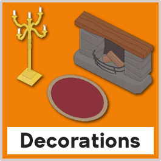

Plate Up! 공략

장식
장식은 고객의 인내심을 높이고 테마 보너스를 얻기 위해 레스토랑 주변에 배치할 수 있는 아이템이다. 시작일 6에 도달하면 플레이어는 해당 실행에 대한 레스토랑의 테마를 결정하는 두 가지 테마 카드 중 하나를 선택하라는 메시지를 받게 된다. 이날 이후 매 5일마다 상점에서 제공하는 일반 가전제품 설계도는 선택한 테마에 해당하는 장식 설계도 8개로 대체된다.